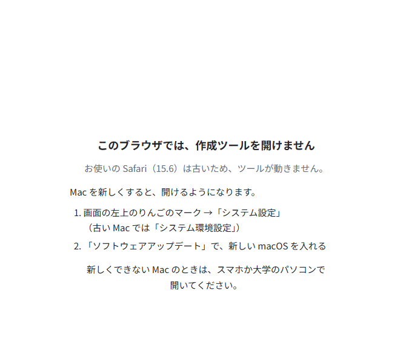
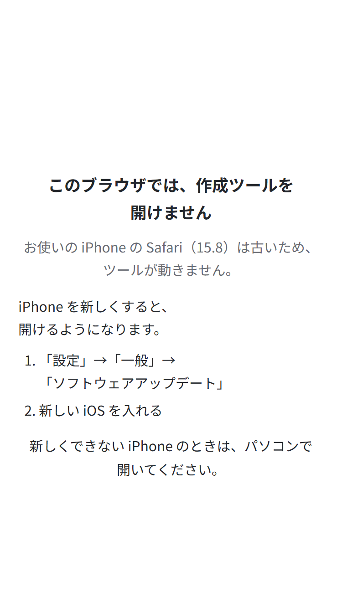
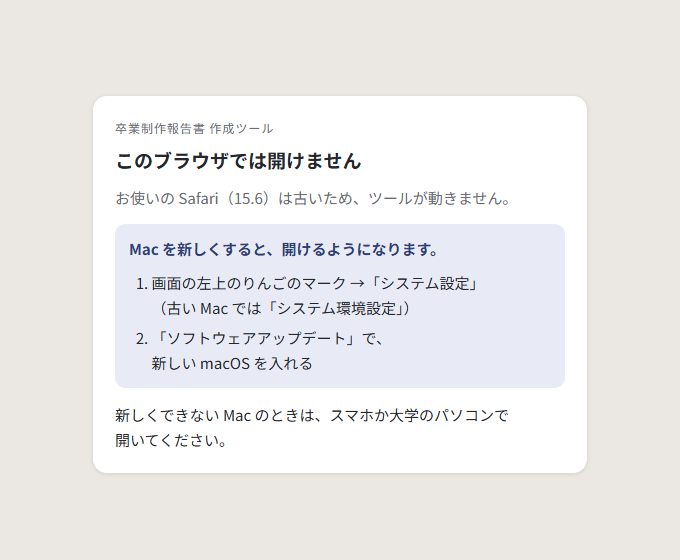
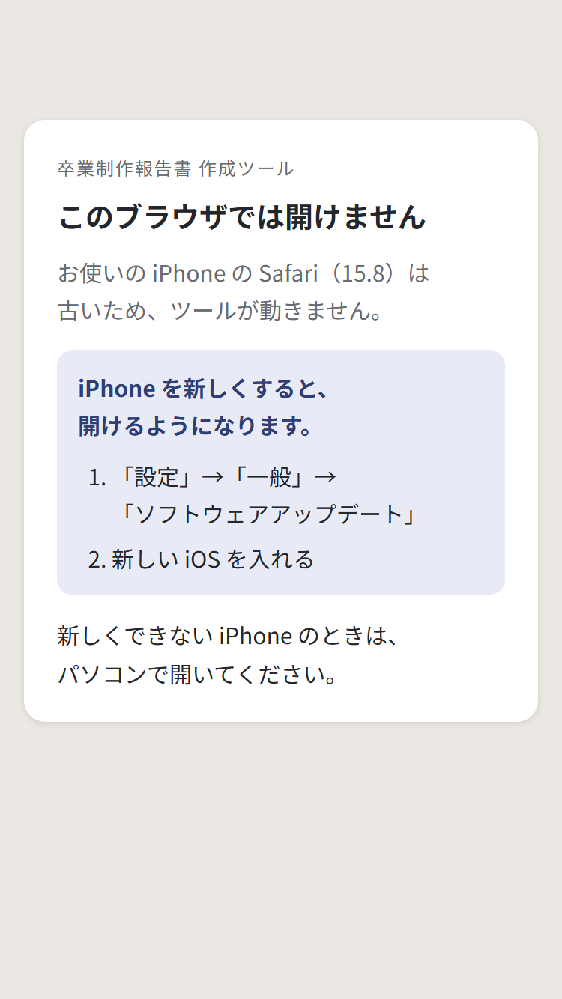
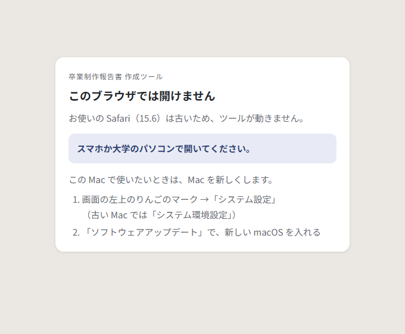
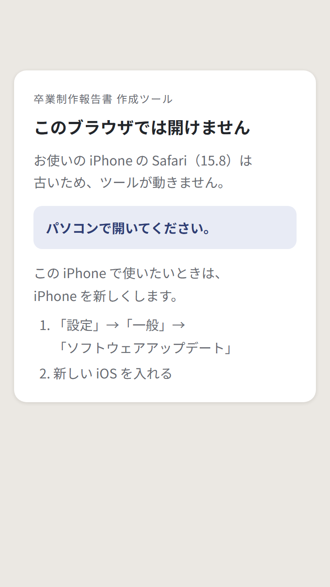

いまは真っ白になるだけです。左は Mac（Safari 15.6）、右は iPhone（iOS 15）で開いたときです。
「読み込んでいます…」と同じ所に、文だけを出す。

Mac

iPhone
カードにまとめ、新しくする手順を色の付いた枠で。ほかの端末で開くことは、その下に。

Mac

iPhone
「スマホか大学のパソコンで」を先に。新しくする手順は、その下に小さく。

Mac

iPhone